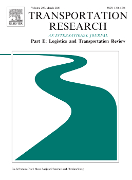
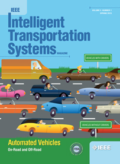
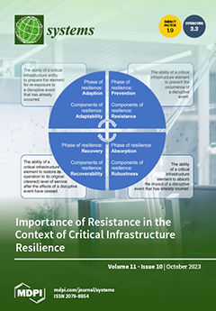

01
도시 물류 최적화
다중 교통수단 시스템, 지하 물류 네트워크, 비행선-차량 경로 문제를 통한 지속가능한 도시 물류 연구.
물류, 공급망, 지능형 제조 분야의 복잡한 현실 문제를 해결하기 위한 혁신적인 최적화 솔루션을 개발합니다.
Operations Research Laboratory는 물류, 공급망, 전력망, 지능형 제조 분야의 복잡한 현실 문제를 해결하기 위한 혁신적인 솔루션을 개발합니다.
수학적 최적화와 머신러닝 기법을 활용하여 도시 물류 시스템, 드론 배송, 공급망 설계, 지능형 제조 공정 등 다양한 산업 분야에 실질적인 가치를 창출하는 연구를 수행합니다.
도시 물류, 드론 배송, 다중 교통수단 통합 운영
적응형 공급망, 크라우드 배송, 기후 회복력 물류
공정 파라미터 최적화, 결함 감소, 머신러닝 기반 제조 시스템
다중 교통수단 시스템, 지하 물류 네트워크, 비행선-차량 경로 문제를 통한 지속가능한 도시 물류 연구.
비행 창고 운영, 트럭-드론 하이브리드 배송, 다중 비행 고도 최적화, 그리고 적재량-에너지 의존성 모델링.
조합 최적화를 위한 적응형 연산자 선택, 공정 제어를 위한 강화학습, 신경망 기반 해법 접근법.
열간 단조 공정 파라미터 최적화, 스탬핑 결함 감소, 머신러닝 통합 FEM 시뮬레이션.
장애 전파 모델링, 복구 대응 최적화, 상호 의존적 인프라 시스템의 회복력 분석.
적응형 공급망 시스템, 크라우드 배송과의 협업 경로, 기후 회복력 농업 물류.
Transportation Research Part E: Logistics and Transportation Review, 204, p.104415
SCIE, JCR 1.4%
Applied Soft Computing, p.113930
SCIE, JCR 9.1%
IEEE Transactions on Intelligent Transportation Systems
SCIE
Materials, 17(11), p.2578
SCIE
The International Journal of Advanced Manufacturing Technology, pp.1–24
SCIEJournal of Materials Research and Technology, 27, pp.8228–8243
SCIE
Computers & Operations Research, 160, p.106389
SCIE
Systems, 11(10), p.514
SCIE
Expert Systems with Applications, 227, p.120260
SCIE
Journal of Materials Research and Technology, 26, pp.5576–5593
SCIE
Simulation Modelling Practice and Theory, 124, p.102730
SCIE
Journal of Materials Research and Technology, 23, pp.1995–2009
SCIE
International Journal of Production Economics, 214, pp.220–233
SCIE
Transportation Research Part C, 143, p.103831
SCIEIEEE Transactions on Intelligent Transportation Systems, 22(12), pp.7521–7530
SCIE전기차가 소비 주체를 넘어 에너지 조절 자원으로 기능하는 상황을 전제로, 물류 네트워크의 운영 의사결정과 전력 계통의 안정적 관리를 하나의 최적화 틀에서 통합하여 비용 효율성·계통 안정성·지속가능성을 동시에 달성할 수 있는 통합 운영 전략을 제시하는 연구
한국연구재단 · 연구책임자실시간 전력요금 신호를 내재화하여 EV 물류 경로·충방전 의사결정과 배전망 최적화(OPF)를 연계하고, 이를 통해 물류 비용과 전력 계통 부담을 동시에 최소화하는 통합 운영 최적화 프레임워크를 정립하는 연구
정석물류학술재단 · 연구책임자
실시간 라스트마일 배송 시스템 개발을 위한 지상-공중 이동 기지 협업 시스템의 이론, 알고리즘 및 응용 연구
한국연구재단연구나 협력에 관심이 있으신가요? 언제든지 연락 주시기 바랍니다.